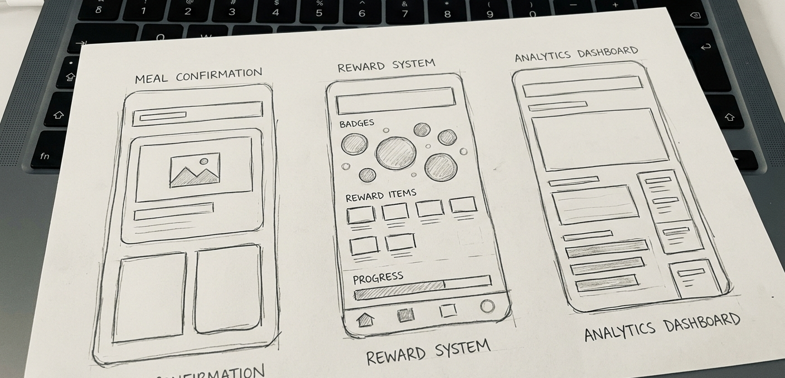
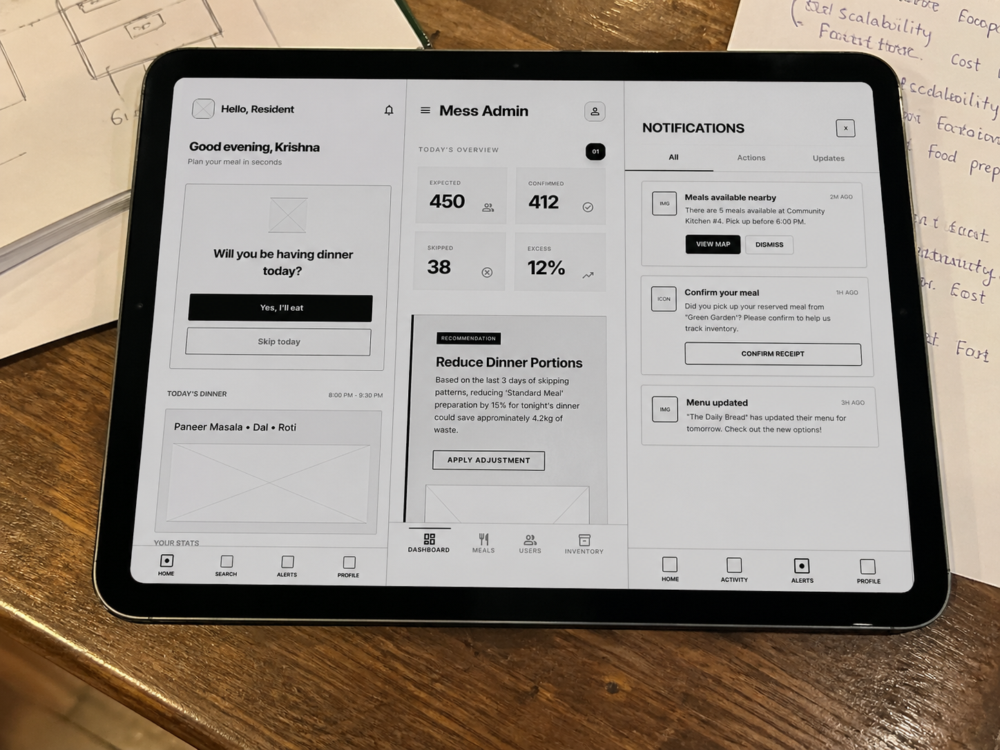
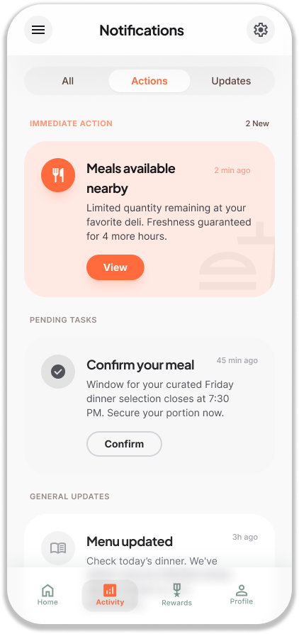

“Food wasn’t being wasted in kitchens. It was being wasted in decisions.”
Reduced food waste by 25% through behavior-driven UX

FAILURE
“Food waste is not a supply problem. It is a coordination failure.”
20–25% wasted daily
Significant portions of prepared meals are discarded every single day.
No real-time tracking
Owner's prepare food based on vague registration numbers, not active presence.
Unplanned skipping
Students skip meals due to fatigue or sudden plans without informing the kitchen.
Operational blindness
Mess owners have zero data loop to optimize future meal preparation.
WHY THIS MATTERS
Economic Loss
Substantial financial drain for hostel owners due to over-purchasing and disposal costs.
Behavioral Gap
Current systems demand too much effort from students to confirm attendance.
System Breakdown
Zero feedback loop between the consuming student and the producing kitchen.
GOALS
Student Goals
- • Confirm/Skip meals in <2 seconds
- • Feel rewarded for active participation
- • Minimal cognitive effort, maximum clarity
Owner Goals
- • Reduce daily food waste by 20–30%
- • Optimize grocery purchase and prep
- • Improve overall operational efficiency
CONSTRAINTS
Real-time Dependency
System must reflect changes instantly to be useful for kitchen planning.
Low Bandwidth
Designed for speed on 3G/4G hostel networks during peak hours.
Budget Constraints
Economical reward system that doesn't impact hostel profit margins.
Research Methods
Direct engagement with active stakeholders to identify the behavioral 'drop-off' points.
12+
Student Interviews
5
Owner Sessions
The BOTH SIDE
The Fast-Paced Student
Needs convenience. If it's not a single-tap action, Students won't do it. High value for small rewards.
"Agar mujhe har baar sirf yeh kehne ke liye login karna pade ki main nahi kha raha hoon, toh main app ko hi use karna chhod dunga."The Over-Cautious Owner
Struggles with financial leaks. Needs a dashboard that tells exactly how much rice to cook at 10 AM.
"Main roz 100 logon ke liye khana taiyaar karta hoon, lekin sirf 70 hi aate hain.Jo khana consume nahi hota, usse mujhe nuksaan ho raha hai."I START FROM

"Khaane ki keemat unse poocho jinhe ek waqt ki roti bhi naseeb nahi hoti." This Hit's me Then I Start..
SYSTEM
IMPORTANT
Pain Points
- ❌ Delayed and manual confirmation.
- ❌ Significant daily food waste (25%).
- ❌ Extremely low user engagement.
Opportunities
- ✅ 2-second confirmation flow.
- ✅ Integrated gamification loop.
- ✅ Real-time prep-guidance dashboard.
DESIGN PILLARS
Speed
Efficiency over visual complexity.
Behavior
Influencing choices through rewards.
Visibility
Data transparency for admins.
Clarity
Removing all operational friction.
Ideation & Selection
We iterated through complex layouts & multi-step forms before selecting the "Fast Confirmation + Visual Feedback Loop" model.
Rejected: 'Manual Food Logging' was too time-consuming for students.

FINALLY READY...
The Behavior Change System
Meal Selection

Instant Action

Rating System

Analytics Dashboard

Notification System
VALIDATION RESULTS
+30%
Active Engagement
+25%
Task Completion
<2.5s
Avg. Confirmation Time
Iteration: Unified the 'Confirm' and 'Menu' screens to eliminate an additional tap, following feedback from 5 stress-testers.
Real-World Impact
“I no longer cook for the 'registered' number; I cook for the 'active' participants. It's changed
our mess economy.”
— Hostel
Warden Perspective
25%
Food Waste Reduction
30%
Engagement Boost
18%
Conversion Rate
"Food is Divine." This ancient Indian philosophy influenced our emotional engagement design—turning a functional utility into a respectful behavior loop.